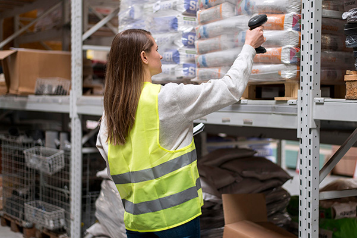

home>인재채용>채용정보
채용정보
한샘의 성장과 비전을 이끌어갈 역량있는 인재를 기다리고 있습니다.
채용절차
-
01
- 서류전형
- 입사지원서를 바탕으로 기본 자격요건과 직무 적합성 검증
-
02
- 1차면접
- 실무진 면접으로 진행, 직무 역량 심층 검증
-
03
- 인성검사
- 조직 적응력 및 조직 적합성 검증
-
04
- 2차면접
- 임원진 면접으로 진행되며 조직 적합성을 종합적으로 검증
-
05
- 채용확정
- 모든 채용 단계가 마무리되여, 입사가 최종 확정됩니다.
특정 인력 충원 발생 시, 등록된 지원서를 우선적으로 검토합니다.
직무소개
-
- IT
-
BackEnd
FrontEnd
APP
DatabaseAdministrator
DataAnalyst
DataEnginner
PI
-
- R&D
-
홈퍼니싱MD
부엌MD
바스MD
장식재MD
VMD
스타일패키지MD
시험보증
제품개발
-
- SCM
- 
구매
생산관리
물류관리
-
- 마케팅
-
브랜드 마케팅
퍼포먼스 마케팅
CLM마케팅
UI/UX
-
- 영업
-
온라인 영업
오프라인 영업(SC/TR)
-
- 전략기획
-
DT전략
DT 신사업 기획/개발
서비스 기획
기획
-
- 지원
-
재무
인사
교육
기업문화
법무
총무
IR
안전보건
홍보
-
IT
- Back-end
- 한샘 통합 온라인 플랫폼과 ERP 시스템의 Back-end를 설계 및 개발합니다. 온라인 플랫폼에 매장，대리점，물류，시공 등 한샘의 오프라인 인프라들이 유기적으로 연계되도록 하고，이를 뒷받침 하는 ERR 시스템까지 개발하고 있습니다．따라서 홈리모델링과 홈퍼니싱 사업의 프로세스를 분석하여 각각의 도메인으로 나누어 설계하고，다양한 내외부 서비스늘의 연게를 위한 유연한 구조의 앱 개발역량이 요구됩니다.
- Front-end
- 한샘 통합 온라인 플랫폼에서 고객과 접촉하고 상호작용 하는 모든 요소를 설계 밎 개발합니다. 고객에게 홈리모델링 서비스와 홈퍼니심 상품이 신속하고 정확하게 전시，상담，판매되도록 개발하는 것이 주요 과제입니다. 이를 위해 기획，디자인 등 유관 부서와 원활히 소통하고， 전달받은 청보를 기술적으로 판단하는 역량이 요구됩니다.
- APP
- 고객의 스마트폰에서 한샘 통합 온라인 플랫폼이 안청적으로 구현되도록 APP을 구축하고 유지/보수합니다. 일반적인 쇼핑몰의 기능 외에도 홈리모델링과 홈퍼니싱을 아우르는 통합 서비스，그리고 각종 리모델링 시공 콘텐츠를 제공할 수 있도록 개발합니다．앱의 기능적인 복잡도나 유지/보수의 난이도가 높은 만큼 모바일 OS(IOS/AOS)에 대한 전문적인 지식과 UI/UX 사용성에 대한 이해가 필요합니다．다수의 사용자가 접속하는 프로그램이므로 운영이 용이하도록 설계하고 유관부서와 원활히 소통하는 것도 중요합니다.
- Database Administrator
- 영업，물류，시공 등 한샘의 다양한 시스템에서 발생하는 데이터를 안정적으로 구축하고 운영합니다. DBMS(MSSQL, Oracle, MYSQL 등)에 대한 전문적인 지식과 데이터 활용 능력을 바탕으로 시스템을 운영하는 것이 필요하며，여러 유관부서와 협업하는 역량 또한 요구됩니다.
- Data Analyst
- 영업，물류，시공 등 한샘의 다양한 시스템에서 발생하는 데이터를 표준화된 기준으로 관리하여 데이터 기반의 업무환경을 구축합니다．각 업무의 복잡한 로직을 현업에서도 이해할 수 있는 데이터 형태로 구조화 하고，유연한 구조의 데이터를 생성하여 신규 시스템을 제작하도록 가이드를 제공합니다．따라서 DBMS 특성을 고려한 데이터 모델링 능력과 데이터를 구조화해서 볼 수 있는 분석력 이 요구됩니다.
- Data Engineer
- 영업, 물류, 시공 등 한샘의 다양한 시스템에서 발생하는 데이터를 여러 형태로 분석하여 시장 변화를 선도합니다. 전통적인 Data Warehouse 영역부터 Data Lake 구축, GA4를 통한 고객 분석, 3D 데이터를 활용하는 Al 영역까지 폭넓은 업무를 수행합니다. 따라서 기본적인 데이터 분석 Tool 활용 능력과 AWS, GCPCIoud 설계 및 운영 능력, 그리고 원활한 소통 능력이 요구됩니다.
- PI
- 대내외 변화에 따라 신규 시스템과 내부 시스템의 작동 프로세스를 기획 및 설게합니다. 한샘은 영업부터 A/S까지의 모든 Value Chain이 시스템으로 구현되어 있습니다. 따라서 El 담당자는 IT 기술에 대한 깊은 이해와 함께 고객 및 현장의 요구사항을 논리적으로 분석하고, 이를 프로세스와 시스템으로 구현하는 기획력이 요구됩니다.
-
R&D
- 홈퍼니싱MD
- 홈퍼니싱MD는 소파, 식탁, 매트리스, 수납 등 홈퍼니싱 상품을 기획 및 개발합니다. 상품 기획, 디자인, 출시, 판매촉진 등 상품 개발의 전 과정을 관리하며 한샘의 히트상품을 만드는 것이 주요 역할입니다. 시장과 소비자 트렌드를 파악하는 시장분석능력, 트렌드를 반영해 상품화하는 기획력과 디자인 감각, 소비자에게 상품의 가치를 효과적으로 전달하는 마케팅 역량이 종합적으로 요구됩니다.
- 부엌MD
- 부엌 MD는 부엌플랜, 장·도어, 악세사리 등 개별 상품부터 공간 전체를 아우르는 상품까지 기획 및 개발합니다. 상품 기획, 디자인, 출시, 판매촉진 등 부엌 상품 개발의 전 과정을 관리하며 한샘의 히트상품을 만드는 것이 주요 역할입니다. 시장과 소비자 트렌드를 파악하는 시장분석능력, 트렌드를 반영해 상품화하는 기획력과 디자인 감각, 소비자에게 상품의 가치를 효과적으로 전달하는 마케팅 역량이 종합적으로 요구됩니다
- 바스MD
- 바스MD는 욕실 상품을 소싱 및 개발할 뿐만 아니라 욕실 공간 전제를 설계 및 디자인하며 국내 욕실 시장을 선도해 나갑니다. 상품 기획, 디자인, 출시, 판매촉진 등 상품 개발의 전 과정을 관리하며 한샘의 히트상품을 만드는 것이 주요 역할입니다. 시장과 소비자 트렌드를 파악하는 시장분석 능력, 트롄드를 반영해 상품화하는 기획력과 디자인 감각, 소비자에게 상품의 가치를 효과적으로 전달하는 마케팅 역량이 종합적으로 요구됩니다.
- 장식재MD
- 장식재MD는 한샘의 차별화된 건재 상품을 쳬계적으로 개발하여 고객의 만족도를 높이는 것을 목표로 합니다. 해당 상품의 특징에 맞게 수요와 공급 체계를 검토하고, 신규 고객군이나 시장을 탐색하여 전략적 상품을 공급합니다. 객관적인 시각과 적극적인 실행력으로 시장을 선도하고, 시장과 소비자 트렌드를 파악하는 시장분석능력이 요구됩니다.
- VMD
- 상품과 고객이 만나는 공간을 시각적으로 기획하고 연출합니다. 상품을 매력적으로 어필할 수 있는 전시 기획을 통해 고객에게 감동을 선사하고, 스토어 아이덴티티를 확립하는 역할을 수행합니다. 따라서 공간에 대한 이해를 바탕으로 트렌드를 제시하는 분석력과 기획력이 필요합니다. 업무 특성상 시각적 연출이 주를 이루고 있어 미적 감각이 필수적으로 요구됩니다.
- 스타일패키지MD
- 스타일패키지MD는 리모델링 상품 담당자로, 고객의 라이프 스타일을 반영하여 한샘의 건재와 가구가 조화릅게 구성된 스타일패키지를 기획 및 개발합니다. 상품 기획, 디자인, 모델하우스 설계 및 매장에 모델하우스를 건립하여 스타일패키지 상품을 제안하고, 판매촉진 등의 역할을 합니다. 따라서 시장과 소비자 트렌드를 파악하는 시장분석능력, 트렌드를 반영해 상품화하는 기획력과 디자인 감각, 고객에게 상품의 가치를 효과적으로 전달하는 마케팅 역량, 리모델링 공사 상품의 설게 능력이 종합적으로 요구됩니다.
- 시험보증
- 고객에게 안전한 제품이 전달될 수 있도록 물리적 화학적 검증을 통해 제품의 안정성을 확보합니다. 시험을 단순 반복하는 것이 아니라, 다양한 공학(역학, 물리, 재료, 화학, 환경 등) 지식을 바탕으로 생산 공법 소재 등을 개선하고 신제품 개발을 지원합니다. 사고를 예방하기 위해 안정성 시험을 기획하고 결과값을 분석하는 능력이 요구됩니다. 또한 한샘이 미래사업을 준비하는 과정에서 글로벌 신뢰도를 확보할 수 있도록 지속적인 발전을 추구하는 태도가 필요합니다.
- 제품개발
- 가구 엔지니어로서 고객이 원하는 디자인을 현실화 하기 위해 모든 가구에 사용되는 소재와 자재의 특성을 이해하고, 이를 구조 역학적으로 설계합니다. 동시에 최적의 원가와 품질 수준을 고려하여 상품의 내재 가치를 설계하는 상품 개발자로서의 역할도 수행합니다. 따라서 생산 물류 시공 과정에 대한 이해와 원가 분석 및 품질 관리 능력이 요구됩니다. 고객이 만족할 수 있는 상품을 개발하기 위해 국내외 시장의 트렌드를 파악하고 이를 응용할 수 있는 창의력 또한 필요합니다.
-
SCM
- 구매
- 국내외 협력업체에서 공급받는 제품의 원가, 품질, 납기를 관리 및 개선합니다. 협력 업체와의 거래에서 상대를 설득하는 협상력과 제품의 특성을 바탕으로 최적의 원가를 도출하는 분석력, 글로벌 소싱에 밑바탕이 되는 어학능력이 필요합니다.
- 생산관리
- 제품의 수요를 예측하여 생산계획을 기획하고 제품이 출고되기 전까지의 모든 과정을 관리합니다. 고객과 약속한 날짜에 제품이 공급되는 것을 최우선으로 여기며 정확한 수요예측과 최적의 생산전략을 수립합니다. 또한 생산원가 절감을 통해 회사의 원가경쟁력을 확보하는 일도 수행하고 있습니다. 따라서 정확한 수요를 예측하는 분석력과 최적의 생산전략을 수립하는 기획력이 요구됩니다.
- 물류관리
- 고객과 약속한 날짜에 제품이 문제없이 설치될 수 있도록 물류의 모든 과점을 관리합니다. 중앙물류센터에 입고된 제품이 지역별 시공기사에게 전달되기까지 물류의 과점을 효뮬적으로 관리하고, 적접 재고 유지를 위해 각 제품의 수요를 예측합니다. 최적의 물류 효율을 만들기 위한 기획 역할도 담당해야 하므로 분석력과 문제해결능력이 필요합니다.
-
마케팅
- 브랜드 마케팅
- 한샘의 비전을 고객에게 전달하여 브랜드의 인지와 선호를 높이고, 고객과의 관게를 발전시켜 나갑니다. 구체적으로 브랜드 캠페인을 통해 Paid Media(TV CF)와 Owned Media(SNS)에서의 존재감을 확대하여 온사이트로의 유입을 이끌어 냅니다. 또한 검색엔진 최적(SEO)를 통해 고객이 필요로 하는 정보가 노출될 확튤을 극대화합니다. 따라서 시장의 트렌드와 고객의 니즈 변화에 민감하게 반응하며 문제를 적극적으로 해결하는 역량이 필요합니다.
- 퍼포먼스 마케팅
- 디지털 상에서의 퍼널을 설계하고, 고객과의 터치 포인트마다 메시지를 기획하여 한샘의 브랜드 성장을 이끕니다. 이를 위해 Iteratlon 과정(데이터 분석 > 아이 데이션 > 가설 수립 및 소재 제작 > 광고 집행)에서 고객과 채널, 소구점에 대한 분석을 바탕으로 브랜드의 성창을 촉진하는 마케팅 전략을 제시합니다.
- CLM 마케팅
- CLM(CustomerLifecycle Management) 마케팅은 고객의 라이프 사이클에 맞춰 한샘의 브랜드 가치를 전달합니다. 고객이 언제, 어디서, 어떤 제품을 구매했는지 파악하여 고객 여정에 맞는 경험을 제공하고, 전 과정에서 ’하나의 한샘'으로 인식되도록 전사적인 차원의 프로모션과 회원 점책 등을 기획합니다. 데이터를 기반으로 전략을 수림하는 분석력에 더해, 유관부서와의 원활한 커뮤니케이션 역량이 요구됩니다.
- UI/UX
- 한샘 통합 온라인 플랫폼의 사용자 경험을 설게하고 디자인하며, 온라인 플랫폼과 내부 시스템의 디자인 가이드를 정립하고 방향성을 마련합니다. 쉽고 편하게 사용 가능한 서비스, 일관성 있고 완성도 높은 결과물을 만들어 가는 것이 주요 역할입니다. 따라서 설득력 있는 디자인 역량, 정확하고 유연한 소통 능력, 트렌드에 민감한 감각이 요구됩니다.
-
영업
- 온라인 영업
- 한샘 통합 온라인 플랫폼에 자사 상품 뿐만 아니라 타업체 상품을 입점시켜 고객에게 폭넓은 구매 경험을 제공합니다. 동시에 제휴몰에 자사 상품을 노출시킴으로써 다양한 온라인 플랫폼에서 개출을 일으킵니다. 따라서 온라인 영업담당자는 급변하는 시장에서 방향성을 도출해내는 분석력과 정확한 인사이트를 통해 결과를 만들어낼 수 있는 추진력, 그리고 업체와의 소통을 위한 협업 능력이 요구됩니다.
- 오프라인 영업
-
SC(Space Coordinator)
한샘 디자인파크의 공간 컨설팅 전문가로 고객의 라이프 스타일에 맞는 홈퍼니싱 상품(가구/패브릭)을 제안합니다. 홈퍼니싱 상품에 대한 전문성을 바탕으로 올바른 정보를 전달하고, 최적의 구매플랜을 제안하는 역할을 수행합니다. 계약부터 사후관리까지 전 과정을 책임지므로 커뮤니케이션 능력과 관리력이 종합적으로 요구됩니다. - TR(Territorial Representative)
한샘의 리모델링 전문가로 담당 지역 내 업체와 신규 제휴를 맺고 리모델링 공사에 리하우스 제품을 공급합니다. 고객의 집에 제품이 안정적으로 설치될 수 있도록 실측, 설계, 발주, 시공관리를 담당하며, 리모델링 제휴점이 시행하는 모든 공사에 리하우스 제품이 사용되도록 영업하는 역할을 수행합니다. 신규 제휴점을 발굴하고 관게를 형성할 수 있는 친화력과 유의미한 매출을 달성하는 목표달성능력 이 요구됩니다.
-
전략기획
- DT 전략
- 한샘의 성공적인 Digital Transformation(DT)을 위해 한샘 통합 온라인 플랫폼의 질적 양적 섬장을 지원합니다. 이를 위해 온오프라인 통합 데이터 분석을 기반으로 DI 사업의 주요 의사결점을 지원할 뿐만 아니라 사업적으로 중요도가 높은 의제틀 선정하여 현업 부서와 함께 해결합니다. 따라서 데이터 기반의 문제해결능력과 다양한 이해관게를 조율하는 소통 능력, 그리고 도출된 결론을 기 반으로 중장기 방향성을 설정하는 기획력 이 요구됩니다.
- DT 신사업 기획/개발
- 한샘의 홈리모델링과 홈퍼니싱 사업 영역에서 Digital Transformation(DT)이 성공적으로 진행될 수 있도록 온오프라인 신사업을 발굴하고 전개합니다. 이런 점에서 DT 신사업 담당자는 급변하는 시장에서 통찰력을 확보하고 유의미한 결과를 만드는 추진력이 필요합니다.
- 서비스 기획
- 한샘 통합 온라인 플랫폼에 방문하는 고객들이 최고의 사용경험을 가져갈 수 있도록 온라인 서 비스를 기획합니다. 청보탐색, 구매, 상담, 결제, 배송, 시공까지 전 과정을 편리하고 안정적으로 만드는 것을 목표로 하고 있습니다. 따라서 시장과 고객 관점에서 니즈를 분석하고 데이터를 기반으로 서비스를 기획하는 역량이 요구됩니다. 또한 영업, 디자인, IT 등 다양한 유관부서와 협업하여 프로덕트의 완성도와 매출 성과를 높이는 역량도 필요합니다.
- 기획
- 전사 관점에서 회사의 가치를 극대화하기 위해 각 사업부와 협조하여 사업을 기획하고 전략을 수립합니다. 구체적으로 장기적인 전략에 기반하여 단계적으로 달성해야 하는 목표를 수립하고, 각 사업부가 기획한 방향대로 목표를 달성 할 수 있도록 지원합니다. 따라서 합리적인 근거에 기반해 자신의 의견을 개진하는 논리력과 기획력, 사업부와 긴밀히 협조해 업무를 진행할 수 있는 추진력과 통솔력이 요구됩니다.
-
지원
- 재무
- 전사의 경염관리 기준과 연 분기 예산을 수립합니다. 월별 매출, 원가를 바탕으로 손익을 추정하며 예산 효율성을 평가합니다. 재무 계획과 실적의 차이 분석을 통해 비즈니스 의사결정 최적화를 목표로 합니다. 따라서 사업 전반에 대한 이해, 재무 지식 분석력이 필요합니다.
- 인사
- 한샘의 미션, 비전과 조직문화에 적합한 인재를 채용하고, 구성원들이 안정적으로 업무에 몰입하여 탁읠한 성과를 낼 수 있도록 지원하는 역할을 합니다. 전사 전략실행을 위한 최적의 조직을 구축하고, 적재적소에 인재를 배지하며, 평가 보상 동기부여 복지 등 여러 인사제도 기획과 운영을 통해 올바른 조직문화를 형성하고 이끌어갑니다. 따라서 회사의 전략을 분석하여 효과적인 인사제도를 마련하는 기획력, 안정적으로 제도를 운영하는 운영능력, 인사 노무적인 리스크 관리를 위한 전문지식, 구성원들과의 원활한 커뮤니케이션을 위한 소통능력 등이 필수역량입니다
- 교육
- 온보딩 리더십 직무 등 각종 교육 프로그램을 기획 및 개발하여 구성원의 성장을 돕고 전사 역량을 강화합니다. 한샘은 내부 직원부터 협력업체, 대리점, 영업사원까지 교육대상이 광범위하기 때문에 전사 교육팀과 각 사업부 교육팀으로 나뉘어 있습니다. 전사 교육팀이 내부 구성원의 역량 개발을 지원한다면, 사업부 교육팀은 다양한 관게자 교육을 통해 고객에게 균일한 양질의 서비스를 제공하는데 기여합니다. 따라서 여러 의견을 바탕으로 효과적인 교육 프로그램을 기획하고 운영하는 역량이 필요합니다.
- 기업문화
- 구성원들에게 회사의 주요 전략을 공유하고, 구성원들의 일하는 방식을 지속적으로 개선합니다. 이를 위해 다양한 이벤트와 프로그램을 기획하여 보다 나은 근무환경을 조성하고, 조직 혹은 개개인이 필요역량을 향상시킬 수 있도록 지원합니다. 업무 수행에 있어 구성원과의 소통이 가장 중요하므로 원활한 커뮤니케이션 역량이 필수로 요구됩니다. 또한 조직과 사람에 대한 관심과 이해를 바탕으로 구성원의 변화를 관리하고 있어, 새로운 직원 경험(Employee Experence)에 대한 기획력과 성장 마인드셋이 필요합니다.
- 법무
- 계약 검토, 법률 자문, 분쟁 해결 등의 법률 서비스를 제공하고, 법적 리스크를 예방하여 회사의 안정적인 성장을 지원합니다. 따라서 법규를 엄격히 준수하는 공정성, 법률 환경 변화를 예측하고 대응할 수 있는 기민함과 법률 지식이 필요합니다.
- 총무
- 전사 자산관리와 지원업무를 통해 근무환경을 개선시키고 회사 임직원의 만족도를 높입니다. 전사 자산(부동산 임대차, 차량, 회원권), 보험, 보안, 비품을 관리하고, 사옥 유지 보수와 공간문화를 조성하는 등 다양한 분야에서 한샘 임직원을 지원합니다. 업무 수행에 있어 임직원과의 원활한 소통 늠력이 요구되며, 정보수집과 분석력을 기반으로 자산을 효율적으로 운영해야 합니다.
- IR
- 투자자와 애널리스트를 대상으로 회사의 두자가치를 제공하고, 유관기관의 법령과 시장감시제도를 준수 공시하여 회사의 리스크를 관리합니다. 전략, 재무, 마케팅, ESG, 홍보 등 다양한 분야를 종합적으로 다루며 회사의 경영진에서부터 외부 금융전문가들까지 폭넓은 소통이 필요합니다. 회사의 주가와 시가총액, 나아가 회사의 가치를 평가받는데 중요한 역할을 수행하는 만큼 재무지식과 분석력, 커뮤니케이션이 요구됩니다.
- 안전보건
- 임칙원의 안전하고 건강한 근무환경을 조성합니다. 산업안전보건법, 중대재해처벌법 등 관련 법 규정에 따라 사업장 내 안전사고와 산업재해 발생을 예방하기 위해 사업장 점검, 사고예방활동, 안전기준 정책수립 업무를 수행합니다. 따라서 산업안전보건법에 관한 사항을 이해하고, 사업장의 자율적인 안전문화 구축을 위한 소통능력이 요구됩니다.
- 홍보
- 각종 매체를 통해 한샘의 경영 전략과 주요 이슈를 전달하여 기업의 긍청적인 이미지를 강화하는 역할을 합니다. 회사의 비전과 경영 전략을 정확하게 이해하는 통잘력, 매체 담당자들과 우호적인 관게를 형성하고 메시지를 효과적으로 전달하는 커뮤니케이션 역량이 요구됩니다.